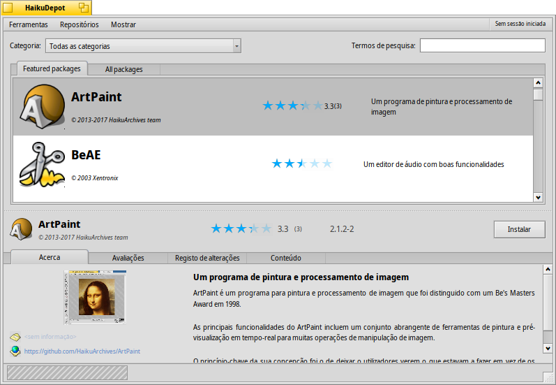
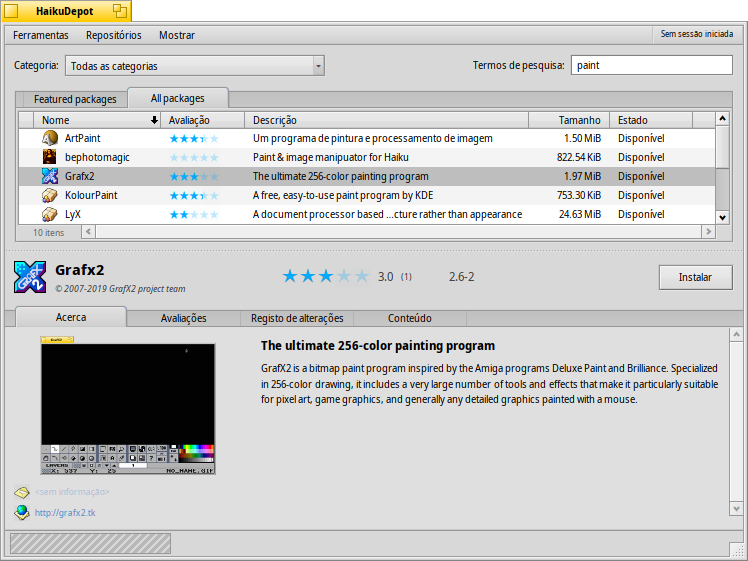
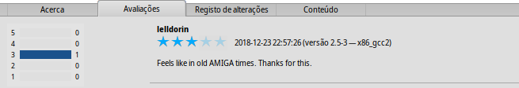
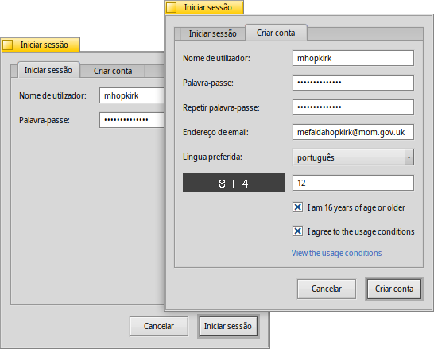
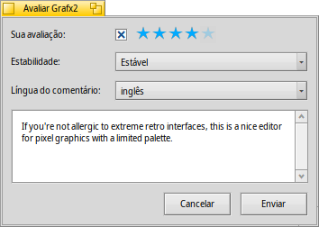

| Índice |
| The Filter The List The Info Area Tools and Show menus Creating a User Account Rating and Commenting Diagnostic Logs |
 HaikuDepot
HaikuDepot
| Deskbar: | ||
| Location: | /boot/system/apps/HaikuDepot | |
| Settings: | ~/config/settings/HaikuDepot/main_settings ~/config/cache/HaikuDepot/ - Cached icons, screenshots, descriptions etc. |
HaikuDepot is the central application when it comes to managing your software packages. With it you can browse and search through package repositories and install and uninstall packages. By default, HaikuDepot starts up with a list of "Featured packages", software that's deemed interesting to many users.
The second tab shows , the display changes to smaller icons and more information arranged in columns:
 The Filter
The Filter
At the top we find a few means to filter the list of available packages below:
The pop-up menu lets you limit the list to individual categories like "Audio" or "Games".
The text field filters the list to those packages that have all the entered (space-delimited) strings in their name or description.
The menu of the menu bar determines which repos are being queried. "Local" packages are the ones that were installed from somewhere other than an online repo; maybe from a USB thumb drive or downloaded from some website or a package that you've built yourself.
The List
Like in any Tracker window, you can choose from a context menu which columns to display by right-clicking the column heading. A left-click sorts the list according to that column. Of course, you can rearrange the columns by dragging them to a new position.
The status column of a package can have one of several states:
: The package is currently installed and ready to be used.
: The package exists in that repository and can be downloaded and installed. If there are any dependencies on other packages, you'll be informed of that while installing and get the choice of downloading/installing all that's necessary.
: Pending is shown for a package that is queued for download/installation. While a package is downloaded, the progress is shown as percentage.
You can grab the dotted line between the packages list and the info area to vertically resize the packages list.
The Info Area
At the bottom is an area that displays information on the package that is currently selected in the list above it.
To the right of package name, author, rating and version is a button, that – depending on the current state of the package – lets you or it. If a package is already installed, you'll find an additional button there to the application.
Below are four tabs: About, Ratings, Changelog and Contents.
The first tab has a detailed description of the package, as well as screenshots and a contact address and URL of the team that maintains the packaged software, if available. Clicking the screenshot thumbnail will open it full-size in a new window
The second tab shows ratings and comments of users, if available.
To the left is a statistic, showing the number of stars (1 to 5) the package got from how many users.
In the middle are user comments with their nickname, the number of stars they gave the package and which version of the package they were rating or commenting on. You'll find more on how to rate a package yourself further down.
Here you find a detailed history of all the versions of the package that have been released so far, if the maintainer of the package provides that information.
The last tab shows all the files and folders a package contains. This only works for already downloaded packages.
Tools and Show menu
In the menu at the top of the window, you'll find an item to . This will request an up-to-date list of all available packages from the repositories.
The second item is to . It opens the Repositories preferences, to add/remove or disable and enable repositories.
opens the SoftwareUpdater to search and install updated packages.
Under you can choose to also display and in the packages list. For the normal user those are of no interest and would only clutter the list. They are important, however, for people who need the libraries, headers etc. of a package to develop and compile programs depending on them.
Of more interest are the options to only show and .
Creating a User Account
To be able to rate a package, you need a user account at the Haiku Depot Server that serves all the packages and keeps track of ratings and user comments. You can create an account within the HaikuDepot application by clicking on the menu in the far right of the menu bar that shows your current status: . Choosing opens a window with two tabs; one to enter your user name and password (once you have those) to log in, and the other to create a new account:
To create an account you need to:
- use an all lower-case user name without special characters
- use a password that's at least 8 characters long with at least 2 capitals and 2 numbers
- provide a valid email address (if you want a new password sent to you in case you forgot it)
- solve the captcha
- tick the checkmarks to confirm you're over 16 and have read the usage conditions linked below them.
After logging in, the top-right menu of the HaikuDepot window will now say , showing your user name. The menu now offers you to or .
Rating and Commenting
After you've created a user account and are logged in, you can rate a package and leave a comment, if you want. Just hover the mouse over the rating stars in the info area of a package and they turn into a button. Click it to open the rating window:
Here you move the mouse over the stars to light them up and choose your rating, you can also choose from a number of levels to judge the stability of the application and pick the language of your optional comment. To make a comment meaningful, you should have worked with the application you're about to rate for a while to become familiar with its features, bugs and quirks. And don't write the next great American novel... keep it short, sweet and polite. :)
After you click the data is transmitted to the server. You may have to go to the menu to before you can see your changes.
At any time, you can come back and edit your comment and re-rate it. You can also hide your rating from other users by deactivating a checkbox , that appears in this window once you've rated a package.
Diagnostic Logs
As HaikuDepot is used, it interacts with network as well as local services. Things can go wrong, sometimes in ways that were not anticipated when the application was written. In those cases the error message may be quite unspecific. To help diagnosing a given problem, HaikuDepot can provide a log of what the application does.
An error message may suggest to view the logs to get further in-depth information or you may be asked to provide the log when you file an issue at the Haiku bug tracking system.
To see the diagnostic logs, HaikuDepot needs to be started from Terminal:
HaikuDepot -v debug
The command uses the -v flag to control the verbosity of the diagnostic logs. Possible values are: off, info, debug and trace. Using off will do only a small amount of logging, while trace does it in the highest detail.
As HaikuDepot starts up and when interacting with the application, you will see text scroll by in the Terminal window; this is the diagnostic log.